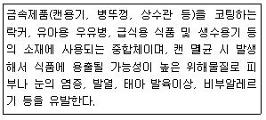
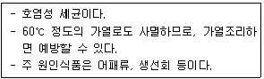
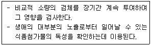
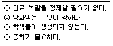
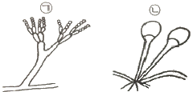
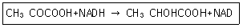
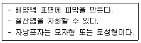

식품기사 (2019-03-03 기출문제)
1과목: 식품위생학
1. 다음 중 차아염소산나트륨 소독 시 비해리형 차아염소산으로 존재하는 양(%)이 가장 많을 때의 pH는?
- pH 4.0
- pH 6.0
- pH 8.0
- pH 10.0
(정답률: 77%)

2. 민물고기를 생식한 일이 없는데도 간흡충에 감염될 수 있는 경우는?
- 덜 익힌 돼지고기 섭취
- 민물고기를 취급한 도마를 통한 감염
- 매운탕 섭취
- 공기를 통한 감염
(정답률: 93%)
3. 아래에서 설명하는 물질은?

- 비스페놀 A
- 다이옥신
- PCB
- 곰팡이 독소
(정답률: 79%)
4. 식품용기의 도금이나 도자기의 유약성분에서 용출되는 성분으로 칼슘(Ca)과 인(P)의 손실로 골연화증을 초래할 수 있는 금속은?
- 납
- 카드뮴
- 수은
- 비소
(정답률: 55%)
5. dl-멘톨은 식품첨가물 중 어떤 종류에 해당되는가?
- 보존료
- 착색료
- 감미료
- 향료
(정답률: 62%)
6. 경구감염병의 특성과 거리가 먼 것은?
- 수인성 전파가 일어날 수 있다.
- 2차 감염이 빈번하게 발생한다.
- 미량의 균으로도 감염될 수 있다.
- 식중독에 비하여 잠복기가 짧다.
(정답률: 82%)
7. 식품제조ㆍ가공업의 HACCP 적용을 위한 선행요건이 틀린 것은?
- 작업장은 독립된 건물이거나 식품취급외의 용도로 사용되는 시설과 분리되어야 한다.
- 채광 및 조명시설은 이물 낙하 등에 의한 오염을 방지하기 위한 보호장치를 하여야 한다.
- 선별 및 검사구역 작업장의 밝기는 220룩스 이상을 유지하여야 한다.
- 원ㆍ부자재의 입고부터 출고까지 물류 및 종업원의 이동 동선을 설정하고 이를 준수하여야 한다.
(정답률: 87%)
8. 인수공통감염병이 아닌 것은?
- 광견병, 돈단독
- 브루셀라병, 야토병
- 결핵, 탄저병
- 콜레라, 이질
(정답률: 79%)
9. 다이옥신(dioxin)에 대한 설명이 틀린 것은?
- 자동차 배출 가스, 각종 PVC 제품 등 쓰레기의 소각과정에서도 생성된다.
- 다이옥신 중 2, 3, 7, 8, -TCDD가 독성이 가장 강한 것으로 알려져 있다.
- 다이옥신은 색과 냄새가 없는 고체물질로 물에 대한 용해도 및 증기압이 높다.
- 환경시료에서 미량의 다이옥신 분석이 어렵다.
(정답률: 66%)
10. HACCP 시스템 적용 시 준비단계에서 가장 먼저 시행해야 하는 절차는?
- 위해요소분석
- HACCP팀 구성
- 중요관리점 결정
- 개선조치 설정
(정답률: 80%)
11. 우유 중에서 많이 발견될 수 있는 aflatoxin은?
- B1
- M1
- G1
- B2
(정답률: 69%)
12. 식품에 존재하는 유독성분과 그 식품이 바르게 연결된 것은?
- 감자 - muscarine
- 면실유 - gossypol
- 수수 - amygdalin
- 독미나리 - ergotoxin
(정답률: 86%)
13. Mycotoxin 중 신장독으로 알려진 성분은?
- 시트리닌(citrinin)
- 아플라톡신(aflatoxin)
- 파튜린(patulin)
- 류테오스키린(luteoskyrin)
(정답률: 60%)
14. 식품 조리 시 가열처리에 의해 생성되는 유해물질이 아닌 것은?
- benzo[a]pyrene
- paraben
- acrylamide
- benz[a]anthracene
(정답률: 74%)
15. 식품에 사용되는 보존료의 조건에 적합하지 않은 것은?
- 독성이 없거나 매우 미미할 것
- 식품의 물성에 따라 작용이 가변적일 것
- 미량 사용으로 효과적일 것
- 장기간 효력을 나타낼 것
(정답률: 84%)
16. 식품을 가공하는 종업원의 손 소독에 가장 적합한 소독제는?
- 역성비누
- 크레졸
- 생리식염수
- 승홍
(정답률: 88%)
17. 다음 설명과 관계가 깊은 식중독은?

- 살모넬라균 식중독
- 병원성 대장균 식중독
- 장염비브리오균 식중독
- 캠필로박터균 식중독
(정답률: 84%)
18. 소독약의 살균력을 평가하는 기준에 사용되는 약제는?
- 크레졸
- 질산은
- 알코올
- 석탄산
(정답률: 80%)
19. 다음 설명에 해당하는 독성시험법은?

- 급성독성시험
- 아급성독성시험
- 만성독성시험
- 최기형성시험
(정답률: 87%)
20. 미생물에 의한 부패에 대한 설명이 틀린 것은?
- 미생물에 의하여 식품의 변색, 가스 발생, 점액 생성, 조직 연화 등 부패 현상이 나타난다.
- 식품의 부패를 예방하기 위하여 보존료를 사용할 수 있다.
- 냉동처리를 하면 식품의 표면건조를 통해 미생물의 생육을 정지시키며, 사멸을 유도할 수 있다.
- 부패균은 식품의 종류에 따라 다르다.
(정답률: 89%)
2과목: 식품화학
21. 등온흡착 BET관계식을 통해 구할 수 있는 것은?
- 상대습도
- 분자량
- 단분자층 수분 함량
- 수분활성
(정답률: 71%)
22. 효소의 반응에 영향을 미치는 인자에 대한 설명이 틀린 것은?
- 온도가 상승하면 효소의 반응 속도가 증가하나, 최적 온도 이상이 되면 효소의 활성을 상실한다.
- Ca, Mn은 효소의 작용을 억제하는 물질이다.
- 효소반응은 초기에는 효소의 농도와 활성도가 비례한다.
- 효소반응에는 pH의 조절이 필요하며, 작용 최적 pH는 효소나 기질의 종류 등에 따라 다르다.
(정답률: 70%)
23. 우유의 가공 공정에 대한 설명 중 틀린 것은?
- 균질화 공정을 통하여 단백질 및 지방의 소화율, 흡수율을 증진시킨다.
- 멸균우유는 가열취가 거의 없고 비타민 등 영양소의 손실을 최소화한 것이다.
- 우유를 40℃ 이상에서 가열하면 얇은 피막을 형성하는 램스덴(Ramsden)현상이 일어나는데 지방과 락토알부민이 피막성 응고물과 어울려 형성된 것이다.
- 우유를 80℃ 이상에서 가열하면 휘발성 황화물과 황화수소가 생성되어 특유의 가열취가 발생한다.
(정답률: 74%)
24. 인체 내에서 Fe의 생리작용에 대한 설명으로 틀린 것은?
- 헤모글로빈의 구성성분이다.
- 과잉 섭취 시 칼슘의 흡수율을 저하시킬 수 있다.
- 식품 중의 phytic acid는 철의 흡수를 방해한다.
- 인체 내에 가장 많은 무기질이며, 결핍 시 골다공증을 일으킨다.
(정답률: 78%)
25. 결합수에 대한 설명이 틀린 것은?
- 미생물의 번식과 성장에 이용되지 못한다.
- 당류, 염류 등 용질에 대한 용매로 작용하지 않는다.
- 보통의 물보다 밀도가 작다.
- 식품 성분과 수소결합을 한다.
(정답률: 69%)
26. 다음 중 프로비타민 A에 해당하는 것으로만 나열된 것은?
- α-카로틴, β-카로틴, γ-카로틴, 라이코펜
- α-카로틴, β-카로틴, 크립토잔틴, 루테인
- β-카로틴, γ-카로틴, 라이코펜, 레티놀
- α-카로틴, β-카로틴, γ-카로틴, 크립토잔틴
(정답률: 63%)
27. 100g 우유(수분:89%, 회분1%, 단백질:3%, 지방질:3%, 탄수화물4%)의 열량(kcal)은 얼마인가?
- 35
- 45
- 55
- 65
(정답률: 77%)
28. 다음 중 뉴톤 유체(Newtonian fluid)의 특성을 가진 식품은?
- 우유
- 마요네즈
- 케첩
- 마가린
(정답률: 80%)
29. 유화(emulsion)에 대한 설명으로 옳은 것은?
- 유화제 중 소수성 부분이 친수성 부분보다 큰 경우에는 수중유적형(O/W) 유화액을 생성시킨다.
- 유화제 분자내의 친수기와 소수기의 균형은 HLB값으로 표시하며, HLB값이 4~6인 유화제는 유중수적형(W/O)이다.
- 우유, 아이스크림, 마요네즈는 유중수적형(W/O), 버터, 마가린은 수중유적형(O/W)이다.
- 유화제는 물과 기름의 계면에 계면장력을 강화시켜 유화현상을 일으킨다.
(정답률: 71%)
30. 요오드값(iodine value)은 유지의 어떤 화학적 성질을 표시하여 주는가?
- 유리지방산의 함량 백분율
- 수산기를 가진 지방산의 함량
- 유지 1g을 검화하는데 필요한 요오드의 양
- 유지에 함유된 지방산의 불포화도
(정답률: 64%)
31. 쌀, 밀 등 곡류의 단백질 조성에 있어서 부족한 필수아미노산이 아닌 것은?
- lysine
- methionine
- phenylalanine
- tryptophan
(정답률: 48%)
32. 유지의 경화공정과 트랜스지방에 대한 설명이 틀린 것은?
- 경화란 지방의 이중결합에 수소를 첨가하여 유지를 고체화시키는 공정이다.
- 트랜스지방은 심혈관질환의 발병률을 증가시킨다.
- 식용류지류 제품은 트랜스지방이 100g당 5g 미만일 경우 “0”으로 표시할 수 있다.
- 경화된 유지는 비경화유지에 비해 산화 안정성이 증가하게 된다.
(정답률: 82%)
33. 식용유지, 지방질식품에서 항산화제에 부가적인 효과를 주는 시너지스트(synergist)가 아닌 것은?
- 구연산
- 주석산
- 아스코브산
- 유리지방산
(정답률: 73%)
34. 중성지질로 구성된 식품을 효과적으로 측정할 수 있는 조지방 측정법은?
- 산분해법
- 뢰제ㆍ고트리브(Roese-Gottlieb)법
- 클로로포름 메탄올 혼합용액 추출법
- 에테르(ether)추출법
(정답률: 81%)
35. 같은 종류의 맛을 느낄 수 있는 것으로 연결된 것은?
- 글라이시리진, 카페인
- 스테비오사이드, 자일리톨
- 퀴닌, 구연산
- 페릴라틴, 캡사이신
(정답률: 79%)
36. 양파를 가열 조리할 경우 자극적인 맛이 사라지고 단맛을 나타내는 원인은?
- propyl allyl disulfide가 가열로 분해되어 propyl mercaptan으로 변했기 때문이다.
- quercetin이 가열에 의해 mercaptan으로 변했기 때문이다.
- 섬유질이 amylase 효소의 분해를 받아 포도당을 생성했기 때문이다.
- carotene이 가열에 의해 단맛을 내는 lycopene으로 변화되었기 때문이다.
(정답률: 79%)
37. 식품의 관능검사에서 종합적 차이검사에 해당하는 것은?
- 이점비교검사
- 일-이점검사
- 순위법
- 평점법
(정답률: 74%)
38. 시토스테롤(sitosterol)은 다음 중 어디에 해당하는가?
- 동물성 스테롤
- 식물성 스테롤
- 미생물 스테롤
- 왁스
(정답률: 73%)
39. 지방산화 메커니즘에 대한 설명 중 틀린 것은?
- 유지의 자동산화 초기에는 일정 기간 동안 산소흡수속도가 매우 낮다.
- 일중항 산소(singlet oxygen)에 의한 산화는 지방의 이중 결합과 유도단계 없이 바로 결합하기에 반응 속도가 빠르다.
- 효소에 의한 산화 중 lipoxygenase에 의한 산화의 기질로는 올레산, 리놀레산, 리놀렌산, 아라키돈산이 모두 될 수 있다.
- 튀김유와 같은 고온(180℃)에서는 생성된 hydroperoxide가 즉시 분해하여 거의 축적되지 않는다.
(정답률: 50%)
40. 식품성분분석에 있어서 검체의 채취방법이 틀린 것은?
- 미생물검사를 요하는 검체는 멸균된 기구, 용기 등을 사용하여야 한다.
- 점도가 높은 시료는 적절한 방법을 사용하여 점도를 낮추어 채취할 수 있다.
- 냉동식품은 상온으로 해동시켜 검체를 채취해야 한다.
- 수분측정시료는 검체를 밀폐용기에 넣고 온도변화를 최소화한다.
(정답률: 81%)
3과목: 식품가공학
41. 젤리 응고에 관여하지 않는 물질은?
- 산
- 단백질
- 펙틴질
- 당분
(정답률: 73%)
42. 현미를 100으로 보면, 7분도미의 도정률은 약 얼마인가? (단, 현미의 겨함량은 8%)
- 96%
- 94%
- 92%
- 88%
(정답률: 58%)
43. 식품가공에서의 단위조작기술이 아닌 것은?
- 증류
- 농축
- 살균
- 품질관리(QC)
(정답률: 79%)
44. 다음 중 같은 두께에서 기체 투과성이 가장 낮은 필름(film) 재료는?
- 폴리에틸렌
- 폴리프로필렌
- 폴리염화비닐리덴
- 폴리염화비닐
(정답률: 50%)
45. 효소 당화법에 비하여 산 당화법이 갖는 특징으로 옳은 것을 모두 고른 것은?(오류 신고가 접수된 문제입니다. 반드시 정답과 해설을 확인하시기 바랍니다.)

- ㉠, ㉡
- ㉡, ㉣
- ㉢, ㉣
- ㉠, ㉣
(정답률: 59%)
46. 밀가루의 물리적 시험법에 관한 설명이 틀린 것은?
- 아밀로그래프에서 아밀라아제의 역가를 알 수 있다.
- 아밀로그래프로 최고 점도와 호화 개시 온도를 알 수 있다.
- 인스텐소그래프로 반죽의 신장도와 항력을 알 수 있다.
- 인스텐소그래프로 강력분과 중력분을 구별할 수 있다.
(정답률: 68%)
47. 수산 건조식품 중 소건품에 대한 설명으로 옳은 것은?
- 얼려서 건조한 것
- 소금에 절여서 건조한 것
- 찌거나 삶아서 건조한 것
- 조미하지 않고 원료를 그대로 건조한 것
(정답률: 69%)
48. 동물근육의 사후경직 과정 중 최고의 경직을 나타내는 극한산성(ultimate acidity) 상태일 때의 pH는 약 얼마인가?
- 6.0
- 5.4
- 4.6
- 3.5
(정답률: 49%)
49. 소시지를 만들 때 고기에 향신료 및 조미료를 첨가하여 혼합하는 기계는?
- silent cutter
- meat chopper
- meat stuffer
- packer
(정답률: 69%)
50. 버터류의 식품 유형 중, 버터의 ㉠유지방과 ㉡수분 함량 기준이 모두 옳은 것은?
- ㉠ 70% 이상, ㉡ 20% 이하
- ㉠ 80% 이상, ㉡ 18% 이하
- ㉠ 75% 이하, ㉡ 25% 이상
- ㉠ 80% 이하, ㉡ 16% 이상
(정답률: 71%)
51. 식물성 유지의 채유법에 대한 설명이 틀린 것은?
- 압착법 공정 중 파쇄는 원료의 종류에 따라 압쇄하는 정도를 다르게 하는데, 이것은 착유율과 관계가 깊다.
- 증기처리법에서 탱크에 압력을 가하여 가열처리하면 기름이 아래로 가라앉는다.
- 효소에 의한 유리지방산 생성을 방지하기위해 유지종자를 건조시켜 수분함량을 조정한다.
- 추출용제로는 석유성분에서 증류하여 만드는 헥산이 있다.
(정답률: 62%)
52. 20℃의 물 1톤을 24시간 동안 -15℃의 얼음으로 만드는 데 필요한 냉동능력은 약 얼마인가? (단, 물의 비열은 1.0kcal/kgㆍ℃, 얼음의 비열은 0.5kcal/kgㆍ℃이다.)
- 2.36 냉동톤
- 2.10 냉동톤
- 1.78 냉동톤
- 1.35 냉동톤
(정답률: 37%)
53. 경화유 제조 시 수소를 첨가하는 반응에서 사용되는 촉매는?
- Pb
- Au
- Fe
- Ni
(정답률: 79%)
54. 젤리 속에 과일의 과육 또는 과피의 조각을 넣어 만든 제품은?
- 파이필링
- 잼
- 마말레이드
- 프리저브
(정답률: 75%)
55. 동결건조의 원리를 가장 잘 나타낸 것은?
- 증발에 의한 건조
- 냉풍에 의한 건조
- 승화에 의한 건조
- 진공에 의한 건조
(정답률: 77%)
56. 다음 중 EPA와 DHA가 가장 많이 함유되어 있는 식품은?
- 닭가슴살
- 삼겹살
- 정어리
- 쇠고기
(정답률: 83%)
57. 냉동식품의 해동과정에서 식품으로부터 액즙이 유출되는 현상을 무엇이라 하는가?
- glaze
- drip
- micelle
- thaw
(정답률: 85%)
58. 압출가공 방법인 extrusion cooking 과정 중 일어나는 물리ㆍ화학적 변화가 아닌 것은?
- 조직 팽창 및 밀도 조절
- 단백질의 변성, 분자 간 결합
- 전분의 수화, 팽윤
- 전분의 노화 및 결합
(정답률: 60%)
59. 아미노산 간장 제조에 사용되지 않는 것은?
- 코지
- 탈지대두
- 염산용액
- 수산화나트륨
(정답률: 61%)
60. 아이스크림 제조 시 균질의 효과가 아닌 것은?
- 믹스의 기포성을 좋게 하여 오버런을 증가시킨다.
- 아이스크림의 조직을 부드럽게 한다.
- 믹스의 동결공정으로 교동에 의해 일어나는 응고된 덩어리의 생성을 촉진시킨다.
- 숙성(aging) 시간을 단축시킨다.
(정답률: 75%)
4과목: 식품미생물학
61. 단백질의 생합성에 대한 설명 중 틀린 것은?
- DNA의 염기 배열순에 따라 단백질의 아미노산 배열순위가 결정된다.
- 단백질 생합성에서 RNA는 m-RNA →r-RNA → t-RNA 순으로 관여한다.
- RNA에는 H3PO4, D-ribose가 있다.
- RNA에는 adenine, guanine, cytosine, tymine이 있다.
(정답률: 71%)
62. 맥주 발효 시 ㉠상면발효 효모와 ㉡하면발효 효모를 옳게 나열한 것은?
- ㉠ Saccharomyces carlsbergensis
㉡ Saccharomyces cerevisiae - ㉠ Saccharomyces cerevisiae
㉡ Saccharomyces carlsbergensis - ㉠ Saccharomyces rouxii
㉡ Saccharomyces cerevisiae - ㉠ Saccharomyces ellipsoideus
㉡ Saccharomyces cerevisiae
(정답률: 78%)
63. 설탕배지에서 배양하면 Dextran을 생산하는 균은?
- Bacillus levaniformans
- Leuconostoc mesenteroides
- Bacillus subtilis
- Aerobactor levanicum
(정답률: 67%)
64. 다음 그림 ㉠, ㉡에 해당하는 곰팡이 속명은?

- ㉠Penicillium, ㉡Aspergillus
- ㉠Aspergillus, ㉡Mucor
- ㉠Penicillium, ㉡Rhizopus
- ㉠Aspergillus, ㉡Penicillium
(정답률: 69%)
65. 미생물의 대사산물 중 혐기성 세균에 의해서만 생산되는 것은?
- acetic acid, ethanol
- citric acid, ethanol
- propionic acid, butanol
- glutamic acid, butanol
(정답률: 57%)
66. 이상형(hetero형) 젖산발효 젖산균이 포도당으로부터 에탄올과 젖산을 생산하는 당대사경로는?
- EMP 경로
- ED 경로
- Phosphoketolase 경로
- HMP 경로
(정답률: 37%)
67. 식품의 산화환원전위 값이 음성값(negative)을 나타내는 식품은?
- 오렌지 주스
- 마쇄한 고기
- 통조림 식품
- 우유(원유)
(정답률: 51%)
68. 액체배양의 목적으로 적합하지 않은 것은?
- 미생물 균체의 생산
- 미생물 대사산물의 생산
- 미생물의 증균 배양
- 미생물의 순수 분리
(정답률: 69%)
69. 그램양성균의 세포벽 성분은?
- peptidoglycan, teichoic acid
- lipopolysaccharide, protein
- polyphosphate, calcium dipicholinate
- lipoprotein, phospholipid
(정답률: 75%)
70. 아래의 반응에 관여하는 효소는?

- alcohol dehydrogenase
- lactic acid dehydrogenase
- succinic acid dehydrogenase
- α-ketoglutaric acid dehydrogenase
(정답률: 46%)
71. 식품공업에서 아밀라아제를 생산하는 대표적인 균주와 거리가 먼 것은?
- Aspergillus oryzae
- Bacillus subtilis
- Rhizopus delemar
- Candida lipolytica
(정답률: 55%)
72. 글루탐산 등과 같은 아미노산 생산에 사용되고 있는 세균은?
- Corynebacterium glutamicum
- Lactobacillus bulgaricus
- Streptococcus thermophilus
- Bacillus natto
(정답률: 73%)
73. 아래의 설명에 해당하는 효모는?

- Schizosaccharomyces 속
- Hansenula 속
- Debarymyces 속
- Saccharomyces 속
(정답률: 57%)
74. 클로렐라에 대한 설명이 틀린 것은?
- 녹조류에 속하며, 분열에 의해 한 세포가 4~8개의 낭세포로 증식하며 편모는 없다.
- 빛의 존재 하에 간단한 무기염과 CO2의 공급으로 쉽게 증식한다.
- 값싸고 단백질 함량이 높은 단세포단백질(SCP)로 이용된다.
- 세포벽이 얇아 인체 내에서 소화가 잘 된다.
(정답률: 67%)
75. 바실러스 세레우스 정량시험 과정에 대한 설명이 틀린 것은?
- 25g 검체에 225mL 희석액을 가하여 균질화한 후 10배 단계별 희석액을 만든다.
- MYP 한천평판배지에 총 접종액이 1mL가 되도록 3~5장을 도말한다.
- 30℃에서 24±2시간 배양한 후 집락 주변에 혼탁한 환이 있는 분홍색 집락을 계수한다.
- 총 집락 수를 5로 나눈 후 희석배수를 곱하여 집락수를 계산한다.
(정답률: 58%)
76. 무성포자의 종류에 해당하지 않는 것은?
- 분생자(conidia)
- 후막포자(chlamydospore)
- 포자낭포자(sporangiospore)
- 자낭포자(ascospore)
(정답률: 64%)
77. 여름철 쌀의 저장 중 독성물질을 생성하여 황변미를 유발하는 미생물은?
- Bacillus subtilis, Bacillus natto
- Lactobacillus plantarum, escherichia coli
- Penicillus citrium, Penicillus islandicum
- Mucor rouxii, Rhizopus delemar
(정답률: 73%)
78. Bacillus subtilis(1개)가 30분마다 분열한다면 5시간 후에는 몇 개가 되는가?
- 10
- 512
- 1024
- 2048
(정답률: 78%)
79. 소맥분 중에 존재하며 빵의 slime화, 숙면의 변패 등의 주요 원인균은?
- Bacillus licheniformis
- Aspergillus niger
- Pseudomonas aeruginosa
- Rhizopus nigricans
(정답률: 41%)
80. 식품 중 세균 수 측정을 위해 시료 25g과 멸균식염수 225mL를 섞어 균질화하고 시험액을 다시 10배 희석한 후 1mL를 취하여 표준평판 배양하였더니 63개의 집락이 형성되었다. 세균 수 측정 결과는?
- 63 CFU/g
- 630 CFU/g
- 6300 CFU/g
- 63000 CFU/g
(정답률: 69%)
5과목: 생화학 및 발효학
81. 비오틴의 결핍증이 잘 나타나지 않는 이유는?
- 지용성 비타민으로 인체 내에 저장되므로
- 일상생활 중 자외선에 의해 합성되므로
- 아비딘 등의 당단백질의 분해산물이므로
- 장내 세균에 의해서 합성되므로
(정답률: 72%)
82. 핵단백질의 가수분해 순서는?
- 핵산 → nucleotide → nucleoside → base
- 핵산 → nucleoside → nucleotide → base
- 핵산 → nucleotide → base → nucleoside
- 핵산 → base → nucleoside → nucleotide
(정답률: 74%)
83. 정미성 핵산을 생산하는 방법으로 옳지 않은 것은?
- 미생물로부터 purine 계 염기를 생산한 후 화학적으로 ribose와 인산기를 도입하여 합성한다.
- Purine nucleotide를 미생물로 생산하고 화학적으로 인산화하여 생산한다.
- 생화학적 변이주를 이용하여 당으로부터 직접 정미성 nucleotide를 생산한다.
- 효모로부터 RNA를 생산 추출하고, 5-phosphodiesterase를 이용하여 가수분해시켜 얻는다.
(정답률: 29%)
84. 세포벽 합성(cell wall synthesis)에 영향을 주는 항생물질은?
- streptomycin
- oxytetracycline
- mitomycin
- penicillin G
(정답률: 74%)
85. 대사산물 제어 조절계(feedback control)에 관한 설명으로 틀린 것은?
- 합동피드백제어(concerted feedback control)는 과잉으로 생산된 1개 이상의 최종산물이 대사계의 첫 단계 반응의 효소를 제어하는 경우를 말한다.
- 협동피드백제어(cooperative feedback control)는 과잉으로 생산된 다수의 최종산물이 합동제어에서와 마찬가지로 협동적으로 첫 단계 반응의 효소를 제어함과 동시에 각각의 최종산물 사이에도 약한 제어반응이 존재하는 경우를 말한다.
- 순차적피드백제어(sequential feedback control)는 그 계에 존재하는 모든 대사기구의 갈림반응이 그 계의 뒤쪽의 생산물에 의해 제어되는 경우를 말한다.
- 동위효소제어(isozyme control)는 각각의 최종산물이 서로 독립적으로 그 생합성계의 첫 번째 반응의 어떤 백분율로 제어하는 경우이다.
(정답률: 67%)
86. 단백질의 생합성이 이루어지는 장소는?
- 미토콘드리아(mitochondria)
- 리보솜(ribosome)
- 핵(nucleus)
- 액포(vacuole)
(정답률: 76%)
87. 단당류 중 ketose이면서 hexose(6탄당)인 것은?
- glucose
- ribulose
- fructose
- arabinose
(정답률: 69%)
88. DNA의 생합성에 대한 설명으로 옳지 않은 것은?
- DNA polymerase에 의한 DNA 생합성 시에는 Mg2+(혹은 Mn2+)와 primer-DNA를 필요로 한다.
- Nucleotide chain의 신장은 3→5의 방향이며 4종류의 deoxynucleotide-5-triphosphate 중 하나가 없어도 반응은 유지한다.
- DNA ligase는 DNA의 2가닥 사슬구조 중에 nick이 생기는 경우 절단 부위를 다시 인산 diester결합으로 연결하는 것이다.
- DNA 복제의 일반적 모델은 2본쇄가 풀림과 동시에 각각의 주형으로서 새로운 2본쇄 DNA가 만들어지는 것이다.
(정답률: 71%)
89. 세탁용 세제효소에 관한 설명이 틀린 것은?
- 상업용 세제효소들의 구조는 유사하고, 모두 넓은 범위의 기질특이성을 나타낸다.
- 분자량이 20000~30000Da 정의 범위 내에 있고, 효소의 활성부위가 Ser잔기를 갖고 있다.
- Protease 활성은 세제의 pH와 이온강도에 따라 크게 영향을 받는다.
- 세제용 Protease는 세제에 보편적으로 사용되는 음이온 계면활성제보다 비이온 계면활성제에 의해 효소의 불활성화가 더 심해진다.
(정답률: 64%)
90. 포유동물의 지방산 합성에 관한 설명으로 틀린 것?
- 지방산 합성은 세포질에서 일어난다.
- 지방산 합성은 acetyl-CoA로부터 일어난다.
- 다중효소복합체가 합성반응에 관여한다.
- NADH가 사용된다.
(정답률: 53%)
91. 인체 내 비타민 결핍으로 나타나는 증상과의 연결이 틀린 것은?
- 비타민 B12 - 악성빈혈
- 비타민 K - 구루병
- 비타민 B1 - 각기병
- 비타민 C - 괴혈병
(정답률: 68%)
92. 당대사 과정 중 혐기적 단계에서 ATP를 생성시키는 방법은?
- Oxidative phosphoryation
- Glycolysis
- TCA cycle
- Gluconeogenesis
(정답률: 48%)
93. 환경을 오염시키는 농약의 분해에 이용성이 큰 것으로 제시되고 있는 미생물 속은?
- Mucor 속
- Candida 속
- Bacillus 속
- Pseudomonas 속
(정답률: 44%)
94. 혐기적 상태에서 해당작용을 거쳤을 때 포도당 1mole에서 몇 mole의 ATP가 생성되는가?
- 2 mole
- 8 mole
- 16 mole
- 38 mole
(정답률: 70%)
95. 일반적으로 글루탐산 발효에서 비오틴(biotin)과의 관계를 가장 바르게 설명한 것은?
- Biotin이 없는 배지에서 글루탐산의 생성이 최고다.
- Biotin 과량의 배지에서 글루탐산의 생성이 최고다.
- Biotin이 미생물을 생육할 수 있는 정도의 제한된 배지에서 글루탐산의 생성이 최고다.
- Biotin의 농도는 글루탐산 생성과 관계가 없다.
(정답률: 71%)
96. 다음 젖산균 중 이상젖산발효(hetero lacticacid fermentation)를 하는 것은?
- Lactobacillus bulgaricus
- Lactobacillus casei
- Streptococcus lactis
- Leuconostoc mesenteroides
(정답률: 54%)
97. 균체 단백질 생산 미생물의 구비조건이 아닌 것은?
- 미생물이 유해하지 않아야 한다.
- 회수가 쉬워야 한다.
- 생육최적온도가 낮아야 한다.
- 영양가가 높고 소화성이 좋아야 한다.
(정답률: 67%)
98. 효소의 반응속도 및 활성에 영향을 미치는 요소와 거리가 먼 것은?
- 온도
- 수소이온농도
- 기질의 농도
- 반응액의 용량
(정답률: 74%)
99. 발효공정의 일반체계 중 기본단계에 해당되지 않는 것은?
- 배지의 조제 및 살균
- 종균배양
- 배양물의 분해
- 폐수 및 폐기물 처리
(정답률: 39%)
100. 다음 중 전자전달계(electron transport system)에서 전자 수용체로 작용하지 않는 것은?
- FMN
- NAD
- CoQ
- CoA
(정답률: 49%)